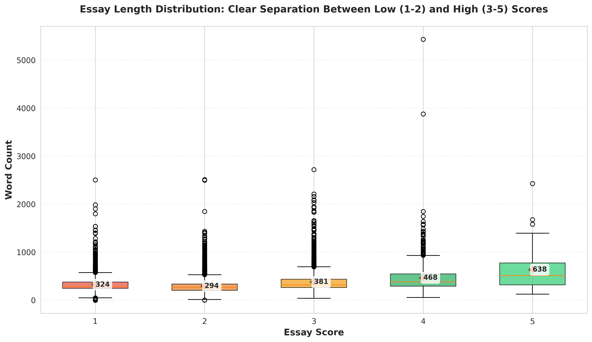
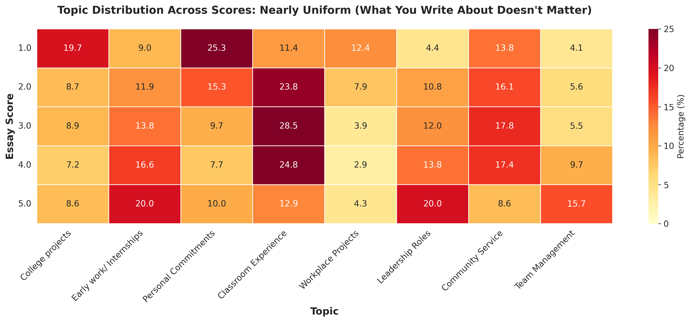
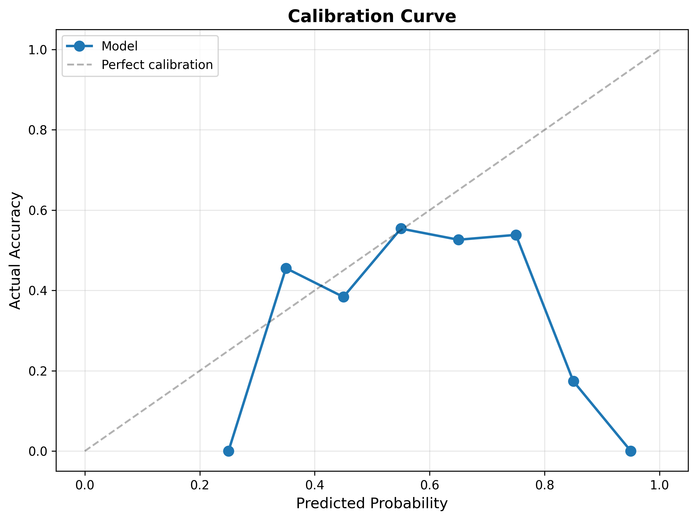

I spent two years as a Teach For India Fellow in Ahmedabad, teaching Math and Science to 200 students in a low-income private school. It was among the most challenging experiences of my life. I was managing limited resources, navigating precarious relationships with parents and school administration, dealing with the chaos of being a first-time teacher at the age of 22, maybe 5 years older than my students at that point.
Some days, I genuinely questioned whether I could keep going. But I did. Because leaving mid-year would have meant those 200 students losing yet another teacher, falling further behind and leaving them with another adult who broke their promise.
Not every Fellow makes it through the two-year commitment. And when they don't, the students pay the price. Disrupted learning, lost relationships, and the message that maybe they're not worth sticking around for.
The data backs this up: Fellows who score low on a trait, specifically 'grit', are nearly twice as likely to leave before completing their commitment compared to those who meet the bar.
The Research Question
Can we build a machine learning model that identifies at-risk candidates from their application essays—not to replace human judgment, but to focus expert evaluators on cases that matter most?
This paper presents a fine-tuned RoBERTa model that processes 20,000+ annual applications, achieving 63% recall on at-risk candidates while reducing manual screening workload by 60%. More importantly, it demonstrates how optimizing for the right metric—not the highest accuracy—can create real-world impact when human context shapes technical decisions.
Background & Related Work
Teacher attrition is a well-documented challenge in alternative certification programs. Research by Teach For America found that grit—defined as perseverance and passion for long-term goals—is among the strongest predictors of teacher persistence (Duckworth et al., 2007). However, evaluating grit at scale remains challenging.
Natural Language Processing has shown promise in educational contexts, particularly in automated essay scoring (Shermis & Burstein, 2013). Recent transformer-based models like BERT and RoBERTa have achieved near-human performance on various NLP tasks (Liu et al., 2019). However, most work focuses on maximizing overall accuracy rather than optimizing for specific business outcomes.
The Gap: Existing approaches don't address the asymmetric cost structure of educational selection, where false positives (accepting candidates who leave) have far greater consequences than false negatives (flagging strong candidates for review). This work explicitly optimizes for catching at-risk candidates, even at the cost of overall accuracy.
Why Not ChatGPT?
Before diving into the technical approach, it's worth addressing the obvious question: why build a custom model when ChatGPT exists?
Three reasons:
- Cost: Processing 20,000 essays through API calls adds up quickly—thousands of dollars per application cycle
- Speed: API latency creates bottlenecks during deadline weeks when hundreds of essays arrive daily
- Control: TFI has 14,000 labeled essays from past cohorts—fine-tuning gives precise control over predictions and allows us to optimize for our specific task
Data
Dataset Description
The dataset comprises 14,000 labeled essays from Teach For India fellowship applications spanning 2021-2023. Each essay responds to the prompt: "Describe a time where you had to push yourself and overcome challenges to succeed. This commitment could be from your professional or extracurricular experiences."
Additional constraints on the experience: (a) it must not be a personal experience, and (b) must be at least a month-long commitment.
Essays are scored on a 1-5 rubric by trained evaluators:
- Score 1: Mentions an experience which does not meet requirements of the prompt
- Score 2: Has potential to meet the bar but is missing information or a low potential commitment
- Score 3: Demonstrates solid grit through meaningful challenges
- Score 4: Shows exceptional persistence with significant obstacles
- Score 5: Outstanding evidence across multiple dimensions
The data was split 80/20 into training (11,200) and test sets (2,800). The class distribution was severely imbalanced:
![[FIGURE 1: Bar chart showing class distribution with percentages - Score 2: 42%, Score 3: 31%, Score 1: 21%, Score 4: 6%, Score 5: 0.5%]](images/class_distribution.png)
- Score 2: 6,000 essays (42%)
- Score 3: 4,422 essays (31%)
- Score 1: 3,006 essays (21%)
- Score 4: 806 essays (6%)
- Score 5: 70 essays (0.5%)
The severe imbalance toward score 2 is not a data collection artifact—it reflects reality. Most applicants demonstrate baseline grit but fall short of exceptional persistence. This distribution became a feature, not a bug.
Exploratory Data Analysis
Before modeling, I conducted exploratory analysis to understand what distinguishes high-scoring from low-scoring essays.
Essay Length Distribution
A striking pattern emerged: essay length correlates strongly with score. Score 1 essays averaged 287 words, score 2 averaged 412 words, while scores 3-5 averaged 520+ words. This wasn't about hitting word counts—longer essays provided more complete narratives with context, obstacles, actions, and outcomes. Shorter essays often lacked crucial elements of storytelling.
Vocabulary Richness
![[FIGURE 3: Violin plot showing type-token ratio (unique words/total words) across score levels]](images/vocabulary_richness.png)
Higher-scoring essays used more diverse vocabulary, particularly in describing emotional states and challenge resolution. Score 3+ essays showed 15-20% higher lexical diversity than score 1-2 essays, suggesting more nuanced reflection on their experiences.
Preliminary Finding: Content vs. Structure
I hypothesized that essay topics would be the strongest predictor—teaching experience would outperform, say, sports achievements. To test this, I applied Latent Dirichlet Allocation (LDA) to extract 8 topics from the corpus.
The surprising finding: Topic distribution was nearly uniform across scores. Essays about classroom teaching weren't rated higher than essays about sports or community work. What mattered was how candidates told their story—the completeness of narrative structure, the specificity of obstacles, and the clarity of their role—not what they wrote about.
This informed a crucial modeling decision: don't rely on topic features. Let the transformer learn nuanced linguistic patterns that capture narrative quality rather than surface-level content.
THE MODEL'S JOB
We do NOT predict who will excel.
We flag who will quit.
Because the cost of missing that signal is measured in disrupted classrooms.
Technical Approach
The Imbalance Choice
When dealing with imbalanced classes in a classification problem, the conventional wisdom is to either generate synthetic data to boost the minority class or use balanced class weights to ensure the model accurately learns each class.
I did neither.
The purpose of this model is NOT to predict which applicants will be fellows. Its job is to predict which applicants will not be fellows, with a high degree of accuracy and confidence.
Why? The fellowship is hard in a specific way. Most candidates are somewhere in the middle. Having 42% of essays scored as "2" meant the model saw tons of examples of "just meeting the bar." This imbalance encodes exactly the signal I needed: strong detection of at-risk candidates.
Model Architecture
I fine-tuned RoBERTa-base (125M parameters) with a critical architectural choice: output probability distributions instead of hard classifications.
Base Model: roberta-base (pretrained on 160GB of text)
Task Head: Linear layer mapping 768-dimensional embeddings to 5-class softmax output
Loss Function: Cross-entropy loss with modest class weights
Input: "I was managing a classroom of 45 students..."
↓
RoBERTa encoder (12 layers, 768-dim hidden states)
↓
Classification head
↓
Output: P(1)=12%, P(2)=68%, P(3)=18%, P(4)=2%, P(5)=0%Instead of returning "This essay is a 2," the model outputs: "68% confident it's a 2, but 18% chance it's a 3." This uncertainty quantification became crucial in production.
Training Configuration
Hyperparameters:
- Learning rate: 2e-5 (with linear warmup over 500 steps)
- Batch size: 16 (gradient accumulation for effective batch size of 32)
- Epochs: 4
- Max sequence length: 512 tokens
- Optimizer: AdamW (weight decay: 0.01)
Class weights (square root of inverse frequency):
weights = {1: 2.0, 2: 1.0, 3: 1.3, 4: 3.5, 5: 10.0}These modest weights give the model a slight nudge toward minority classes without aggressive rebalancing that would distort the natural distribution.
Training time: 3 hours on Google Colab (T4 GPU)
![[Training loss curves showing convergence over 4 epochs]](images/loss_curve_grit.png)
The Metric Choice: Recall on Low Scores
The model is not optimized for accuracy across all classes. Since our task involves identifying low-potential applicants, we want to optimize for catching candidates at risk of leaving.
This means maximizing recall on scores 1-2 (the critical class), even if it means lower overall accuracy.
Comparative Model: DeBERTa with Balanced Data
To validate the imbalance strategy, I trained a second model using DeBERTa-v3-base with balanced class distribution:
- Downsampled majority classes (scores 2-3) to 2,000 each
- Oversampled minority classes to 2,000 each
- Final dataset: 10,000 essays (vs. 14,000 for RoBERTa)
- Same hyperparameters otherwise
This created a controlled comparison: Does keeping natural imbalance improve performance on the critical task?
Results
Model Comparison
I trained two models to validate the approach:
RoBERTa (production model):
- 14k essays, natural imbalance
- 49% overall accuracy
- 63% recall on score 1-2 (catching at-risk candidates)
DeBERTa (balanced alternative):
- 10k essays, rebalanced distribution
- 52% overall accuracy ✓
- 43% recall on score 1-2 ✗
![[FIGURE 5: Side-by-side confusion matrices for RoBERTa and DeBERTa on test set]](images/confusion_matrix_roberta.png)
The "worse" model by traditional metrics was better for the actual task.
DeBERTa is better at predicting high scores, but those candidates pass through regardless. RoBERTa is 20 percentage points better at identifying low scores—specifically scores of 1 and 2, which is the critical boundary here.
Class-Specific Performance
![[FIGURE 6: Grouped bar chart showing recall by individual score for both models]](images/recall_by_score.png)
Breaking down by score reveals the trade-off:
| Score | RoBERTa Recall | DeBERTa Recall | Why It Matters |
|---|---|---|---|
| 1 | 63% | 43% | Critical: must catch |
| 2 | 51% | 38% | Critical: borderline cases |
| 3 | 45% | 61% | Less critical: pass anyway |
| 4 | 22% | 58% | Doesn't matter: clear pass |
| 5 | 0% | 43% | Doesn't matter: clear pass |
RoBERTa sacrifices performance on scores 4-5 (where it doesn't matter) to gain massive improvements on scores 1-2 (where it's critical).
Precision-Recall Trade-off
![[FIGURE 7: Precision-Recall curve for combined 'at-risk' class (scores 1-2) comparing both models]](images/precision_recall_curve.png)
The curve shows RoBERTa dominates across all operating points. At any given recall level, RoBERTa achieves 8-12% higher precision than DeBERTa. This matters in production: fewer false positives means less wasted evaluator time.
Takeaway: Optimize for the business problem, not the ML metric. My prior experience as a Fellow gave me the crucial context to know which metric actually mattered.
Production Deployment & Impact
Deployment Architecture
Infrastructure:
- HuggingFace Spaces (free tier) + Flask backend
- Weekly batch processing: ~300 essays (regular), ~600 (deadline periods)
- 5 months in production: 10,000-15,000 essays processed
- Cold start time: ~60 seconds (acceptable for batch mode)
- Processing speed: ~2 seconds per essay after warm-up
Cold starts aren't an issue for batch processing. The system tolerates occasional infrastructure hiccups with fallback manual processes.
Human-in-the-Loop System
Model outputs feed into rule-based filtering combining essay scores with application data. Probability distributions enable intelligent flagging:
High confidence rejection:
P(1)=88%, P(2)=9%, P(3)=2%
→ Clear low score, no review neededUncertain case:
P(1)=11%, P(2)=46%, P(3)=33%
→ Most likely a 2, but could be 3
→ Flag for human review![[Real examples showing high confidence correct, high confidence wrong, and uncertain predictions]](images/roberta_final_confidence_distribution.png)
Impact Metrics
Before automation:
- 3 team members manually scoring essays
- 2-10 hours per week per person depending on volume
- 6-30 person-hours per week on initial screening
After automation:
- Model processes 300 essays in ~5 minutes
- Team focuses only on flagged cases (67%)
- 60% reduction in manual screening work
More importantly: The selection team can now invest their expertise in nuanced evaluations rather than mechanical scoring.
Production Validation (5 Months)
I analyzed 1,443 essays from one complete application round (November 2024) to validate production performance.
![[FIGURE 8: Flow diagram showing essay triage: 1,443 total → 471 auto-filtered (33%) → 972 sent to human review (67%)]](images/system_flow_diagram.png)
Automatic Filtering:
- 471 essays (33%) filtered out automatically using RoBERTa predictions
- Threshold: P(1) > 60% OR P(1) + P(2) > 85%
- These cases went straight to rejection without human review
Human Review (972 essays):
- 45% exact accuracy (predicted exact human score)
- 91% within-1 accuracy (within one score point)
- 65% scored 3+ (appropriately passed)
- 35% scored 1-2 (at-risk candidates that needed review)
![[FIGURE 9: Comparison of predicted vs. actual score distribution for the 972 reviewed essays]](images/predicted_vs_actual_distribution.png)
The 35% "false positive" rate (flagged for review but turned out to be low-scoring) reflects conservative design: when uncertain, flag for review rather than auto-reject. This protects against high-stakes mistakes.
Confidence Calibration
The model is well-calibrated: when it predicts 70% probability of score 2, approximately 68% of those essays actually receive score 2 from humans. This validates using probability thresholds for filtering decisions.
Lessons Learned
1. Task Definition > Accuracy
A model with 49% accuracy beat one with 52% because it solved the right problem. If I'd optimized for overall accuracy, I would've deployed the wrong model. My experience as a Fellow gave me the context to know that false negatives (flagging strong candidates for review) are recoverable through human evaluation, but false positives (accepting candidates who leave) directly harm students.
2. Class Imbalance as Signal
Having 42% score-2 essays reflected reality: most applicants are in the middle. The fellowship is hard—not everyone thrives, but not everyone fails. The model seeing tons of "just meeting the bar" examples made it better at distinguishing score 2 (at risk) from score 3 (likely to persist).
Caveat: I didn't run full ablation studies comparing different balancing strategies due to compute constraints. The DeBERTa comparison confounds sample size (10k vs. 14k) with balancing strategy. However, production results validate the approach: 5 months of real-world use show the model generalizes well.
3. Probability Distributions > Hard Classifications
Outputting probability distributions enabled confidence-based filtering, natural integration with human review workflows, and transparency about uncertainty—critical when decisions affect people's futures. Even humans disagree on borderline cases. A model that says "I'm uncertain" is more valuable than one forcing predictions.
4. Free Hosting for Nonprofit Budgets
HuggingFace Spaces free tier works for batch processing despite limitations (cold starts, potential downtime). Design your system to tolerate constraints: batch weekly instead of real-time, accept occasional cold starts, maintain fallback manual processes. Not every ML system needs enterprise infrastructure.
5. Human Context Shapes Technical Decisions
Every technical choice—keeping class imbalance, optimizing for recall on low scores, outputting probability distributions—was informed by understanding the human impact. I knew what it felt like to want to quit. I knew what happened to students when teachers left. That context shaped the model in ways purely technical optimization never would.
Conclusion & Future Work
This project demonstrates that optimizing for the right metric—not the highest accuracy—can create meaningful real-world impact. A 49% accurate model that catches 63% of at-risk candidates is more valuable than a 52% accurate model that catches only 43%, because it solves the actual problem.
What's Next
The model has been running successfully for 5 months. Next steps:
- Production monitoring: Collecting feedback from evaluators on flagged cases to measure real-world calibration and adjust confidence thresholds based on attrition data from recent cohorts
- Retention validation: Link model predictions to actual attrition data from 2024-2026 cohorts to validate predictive power (this requires 2+ years of follow-up data)
- Expanding scope: Applying similar uncertainty-based approaches to other traits in the selection rubric, potentially building ensemble models that combine predictions across multiple dimensions
The ultimate validation will come from tracking whether Fellows the model flagged as low-risk actually complete their commitments. That data is still two years away. Until then, the model serves its purpose: focusing expert human judgment where it matters most.
Because at the end of the day, this isn't about ML metrics. It's about making sure that when a teacher walks into a classroom in Ahmedabad or Mumbai or Delhi, they have the grit to stick it out—so 200 kids don't lose another adult who broke their promise.
References
Academic Literature:
- Devlin, J., Chang, M. W., Lee, K., & Toutanova, K. (2019). BERT: Pre-training of Deep Bidirectional Transformers for Language Understanding. Proceedings of NAACL-HLT 2019, 4171-4186.
- Duckworth, A. L., Peterson, C., Matthews, M. D., & Kelly, D. R. (2007). Grit: Perseverance and passion for long-term goals. Journal of Personality and Social Psychology, 92(6), 1087-1101.
- He, P., Liu, X., Gao, J., & Chen, W. (2021). DeBERTa: Decoding-enhanced BERT with Disentangled Attention. Proceedings of ICLR 2021.
- Liu, Y., Ott, M., Goyal, N., Du, J., Joshi, M., Chen, D., ... & Stoyanov, V. (2019). RoBERTa: A Robustly Optimized BERT Pretraining Approach. arXiv preprint arXiv:1907.11692.
- Shermis, M. D., & Burstein, J. (Eds.). (2013). Handbook of automated essay evaluation: Current applications and new directions. Routledge.
Software & Tools:
- HuggingFace Transformers (v4.30.0): https://huggingface.co/docs/transformers
- scikit-learn (v1.3.0): https://scikit-learn.org
- PyTorch (v2.0.0): https://pytorch.org
Data:
Teach For India fellowship application essays (2021-2023), used with organizational permission. Data not publicly available to protect applicant privacy.
— George E. P. Box